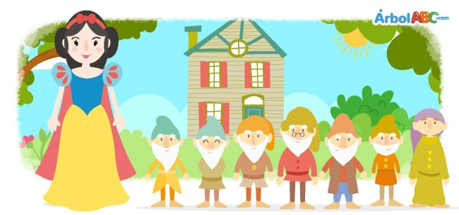

Snow White and the Seven Dwarfs

Once upon a time, there was a beautiful young princess named Snow White. She lived in a faraway kingdom with
her father and stepmother.
Her stepmother, the queen, was also very beautiful but arrogant and proud. She spent all day
staring
at herself in front of the mirror. The mirror was magical and when in front of it she would asked, “Mirror,
mirror on the wall, who is the most beautiful woman of all?”
The mirror would answer, “You are the most beautiful of all women”.
This answer satisfied the queen because she knew that her mirror always told the truth.
However, as the years passed by, the beauty and kindness of Snow White became more evident, even
surpassing that of the queen. Finally, there came a day when the queen asked, “Mirror, mirror, on the wall,
who is the most beautiful of all?”
The mirror answered, “Snow White is kinder and more beautiful than you.”
The queen was filled with anger. She devised a plan to get rid of Snow White. She asked to see
the
palace
hunter and said to him, “Take the young princess to the forest and make sure that the wild animals take care
of her so that we never see her again.”
Tricking Snow White, the hunter took her deep into the forest, but when he was about to carry
out
the queen's orders, he took pity on the beautiful girl and said, “Run, go away, poor girl. Find a safe place
to live.”
Finding herself alone in the forest, she ran as far as she could until it was nightfall. Then,
she spotted a small hut and went into it to sleep. Everything in the cabin was small. There was a table with
a
white tablecloth and seven small plates, each a spoon. Also, there were seven small knives and forks, and
seven jars. There were seven small beds against the wall, one next to the other and covered with blankets as
white
as snow.
Having not eaten all day, Snow White was hungry and thirsty, so she ate a little bit of vegetables and bread
from each plate and drank a small sip from each jar. Then, being tired, she tried laying down on each one of
the beds until finally settling on the seventh bed.
When it was dark, the owners of the cabin returned. They were seven dwarfs who mined gold and
precious stones in the mountains. Inside the cabin, they lit their seven lanterns, and noticed that things
were not exactly in the order in which they had left them.
The first dwarf said, “Who has sat in my chair?”
The second said, “Who ate from my plate?”
The third said, “Who took a piece of my bread?”
The fourth said, “Who ate my vegetables?”
The fifth said, “Who used my fork?”
The sixth said, “Who used my knife?”
The seventh said, “Who drank from my jar?”
Then, the first dwarf, noticing wrinkles in his bed sheets said, “Who has slept in my bed?”
And the others, checking their beds, replied, “Someone has been in our beds too.”
When the seventh dwarf looked in his bed, he saw Snow White, who was sleeping soundly. He
called the others who came over running. “Oh heavens! Oh heavens!” they whispered. “What a dear girl!”
When dawn came, Snow White woke up, and felt scared when she saw the seven dwarfs. Yet
they
were friendly and asked her name.
“My name is Snow White,” she answered. She told them all about her evil stepmother.
Feeling sorry for Snow White, the dwarfs told her she was welcomed to stay with them.
“Our home is yours, and you can stay with us as long as you want. You can take care of our
house, cook, fix the beds, wash, sew and knit.”
Snow White accepted happily and stayed with them. She kept the dwarfs house in order. In
the
morning, they went to the mountains to look for gold and precious stones, and in the evening, they returned,
finding dinner ready.
Time passed and one day, the queen decided to consult her mirror and discovered that the
princess was still alive. Furious, she poisoned an apple and took on the appearance of an old woman.
“A bite of this apple and Snow White will sleep forever,” said the evil queen.
The next day, the dwarfs left for work and Snow White was left alone.
Shortly afterwards, the queen, disguised as an old woman, approached the kitchen window. The
princess offered her a glass of water.
“Thank you!” replied the old woman. “Let me give you this apple in return.”
The moment she bit the apple, Snow White fell unconscious on the floor. The dwarfs, alerted
by forest animals, arrived at the cabin while the evil queen fled.
The dwarfs placed a Snow White in a glass case, hoping one day she would awaken.
The day came when a prince crossing the forest on his horse saw the beautiful girl in the
glass case and marveled at her beauty. He bent down and kissed her on the cheek. At that moment, Snow White
awoke to break the evil queen’s spell.
Snow White and the Prince were married and lived happily ever after.
Moral: Do not count you chickens before they are hatched.

Blanca Nieves y los Siete Enanos
Érase una vez una hermosa joven princesa llamada Blancanieves. Ella vivía en un reino lejano con
su padre y su madrastra.
Su madrastra, la reina, también era muy hermosa pero arrogante y orgullosa. Ella paso todo el dia
curioso
a sí misma frente al espejo. El espejo era mágico y cuando estaba frente a ella le preguntaba: "Espejo,
espejo en la pared, ¿quién es la mujer más bella de todas?
El espejo respondería: "Eres la más bella de todas las mujeres".
Esta respuesta satisfizo a la reina porque sabía que su espejo siempre decía la verdad.
Sin embargo, a medida que pasaron los años, la belleza y amabilidad de Blancanieves se hizo más evidente, incluso
superando el de la reina. Finalmente, llegó un día en que la reina preguntó: "Espejo, espejo, en la pared,
¿Quién es la más bella de todas? ”
El espejo respondió: "Blancanieves es más amable y más bella que tú".
La reina estaba llena de ira. Ella ideó un plan para deshacerse de Blancanieves. Ella pidió ver
la
palacio
cazador y le dijo: "Lleva a la joven princesa al bosque y asegúrate de que los animales salvajes cuiden
de ella para que nunca la volvamos a ver ".
Engañando a Blancanieves, el cazador la llevó al bosque, pero cuando estaba a punto de cargar
fuera
Por orden de la reina, se compadeció de la hermosa niña y le dijo: “Corre, vete, pobre niña. Encuentra un lugar seguro
vivir ".
Al encontrarse sola en el bosque, corrió lo más lejos que pudo hasta el anochecer. Entonces,
ella vio una pequeña choza y se fue a dormir. Todo en la cabaña era pequeño. Había una mesa con
una
mantel blanco y siete platos pequeños, cada uno una cuchara. Además, había siete cuchillos y tenedores pequeños, y
siete tarros Había siete camas pequeñas contra la pared, una al lado de la otra y cubiertas con mantas como
blanco
como nieve.
Al no haber comido en todo el día, Blancanieves tenía hambre y sed, así que comió un poco de verduras y pan.
de cada plato y bebió un pequeño sorbo de cada frasco. Luego, cansada, trató de acostarse con cada uno de
las camas hasta finalmente instalarse en la séptima cama.
Cuando estaba oscuro, los dueños de la cabaña regresaron. Eran siete enanos que extraían oro y
piedras preciosas en las montañas. Dentro de la cabina, encendieron sus siete linternas y notaron que las cosas
no estaban exactamente en el orden en que los habían dejado.
El primer enano dijo: "¿Quién se ha sentado en mi silla?"
El segundo dijo: "¿Quién comió de mi plato?"
El tercero dijo: "¿Quién tomó un pedazo de mi pan?"
El cuarto dijo: "¿Quién se comió mis verduras?"
El quinto dijo: "¿Quién usó mi tenedor?"
El sexto dijo: "¿Quién usó mi cuchillo?"
El séptimo dijo: "¿Quién bebió de mi jarra?"
Entonces, el primer enano, al notar las arrugas en las sábanas de su cama, dijo: "¿Quién ha dormido en mi cama?"
Y los demás, revisando sus camas, respondieron: "Alguien también ha estado en nuestras camas".
Cuando el séptimo enano miró en su cama, vio a Blancanieves, que dormía profundamente. Él
llamó a los otros que vinieron corriendo. “¡Oh cielos! ¡Oh cielos! susurraron ellos. "¡Qué querida niña!"
Cuando amaneció, Blancanieves se despertó y sintió miedo al ver a los siete enanitos. Todavía
ellos
fueron amables y le preguntaron su nombre.
"Mi nombre es Blancanieves", respondió ella. Ella les contó todo sobre su malvada madrastra.
Sintiendo lástima por Blancanieves, los enanos le dijeron que era bienvenida para quedarse con ellos.
“Nuestro hogar es tuyo y puedes quedarte con nosotros todo el tiempo que quieras. Puedes cuidar nuestro
casa, cocina, arregla las camas, lava, cose y teje ".
Blancanieves aceptó felizmente y se quedó con ellos. Mantuvo la casa de los enanos en orden. En
la
Por la mañana, fueron a las montañas a buscar oro y piedras preciosas, y por la tarde regresaron.
encontrar la cena lista.
El tiempo pasó y un día, la reina decidió consultar su espejo y descubrió que el
La princesa todavía estaba viva. Furiosa, envenenó una manzana y adoptó la apariencia de una anciana.
"Un mordisco de esta manzana y Blancanieves dormirá para siempre", dijo la reina malvada.
Al día siguiente, los enanos se fueron a trabajar y Blancanieves se quedó sola.
Poco después, la reina, disfrazada de anciana, se acercó a la ventana de la cocina. los
la princesa le ofreció un vaso de agua.
"¡Gracias!" respondió la anciana. "Déjame darte esta manzana a cambio".
En el momento en que mordió la manzana, Blancanieves cayó inconsciente en el suelo. Los enanos, alertados
por animales del bosque, llegaron a la cabaña mientras la reina malvada huía.
Los enanos colocaron un Blancanieves en una vitrina, esperando que algún día despertara.
Llegó el día en que un príncipe cruzando el bosque en su caballo vio a la hermosa niña en el
vitrina y se maravilló de su belleza. Se inclinó y la besó en la mejilla. En ese momento, Blancanieves
despertó para romper el hechizo de la reina malvada.
Blancanieves y el Príncipe se casaron y vivieron felices para siempre.
Moral: Do not count you chickens before they are hatched.